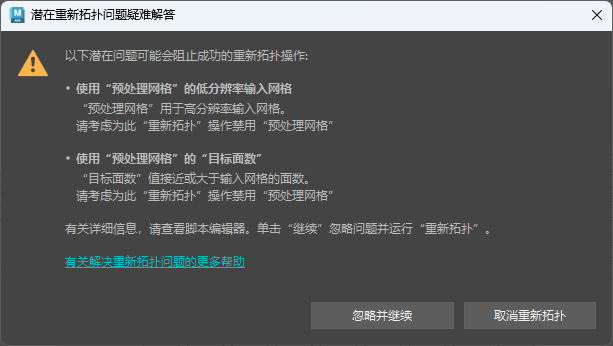

在“重新拓扑选项”(Retopologize Options)（“网格 > 重新拓扑”(Mesh > Retopologize) >  ）中启用“扫描问题”(Scan for issues)时，将检查输入网格是否存在可能会阻止“重新拓扑”(Retopologize)成功运行或对结果产生不利影响的潜在问题。如果检测到问题，将显示“潜在重新拓扑问题疑难解答”(Troubleshoot Potential Retopologize Issues)对话框，其中包含警告和建议的疑难解答步骤：
）中启用“扫描问题”(Scan for issues)时，将检查输入网格是否存在可能会阻止“重新拓扑”(Retopologize)成功运行或对结果产生不利影响的潜在问题。如果检测到问题，将显示“潜在重新拓扑问题疑难解答”(Troubleshoot Potential Retopologize Issues)对话框，其中包含警告和建议的疑难解答步骤：
）中启用“扫描问题”(Scan for issues)时，将检查输入网格是否存在可能会阻止“重新拓扑”(Retopologize)成功运行或对结果产生不利影响的潜在问题。如果检测到问题，将显示“潜在重新拓扑问题疑难解答”(Troubleshoot Potential Retopologize Issues)对话框，其中包含警告和建议的疑难解答步骤：

下表进一步说明了每个警告并建议了可能的解决方案。
|
问题 |
可能的解决方案 |
|---|---|
|
输入网格上高百分比的边被标记为硬边 |
软化尽可能多的边（“网格显示 > 软化边”(Mesh Display > Soften Edge)）。仅将硬边限制到需要保持不同特征（例如硬角度和角点）的区域。
注： 通过选择网格并转到“显示 > 多边形 > 硬边(颜色)”(Display > Polygons > Hard Edges (color))，可以查看网格上的当前硬边。
|
|
输入网格是非流形网格 |
在启用“非流形”(Non-manifold)的情况下，对网格运行“网格 > 清理”(Mesh > Cleanup)。 |
|
输入网格包含窄三角形 |
对包含窄三角形的区域运行“网格 > 重新划分网格”(Mesh > Remesh)，以生成更均匀的细分。 |
|
输入网格包含短边 |
若要从输入网格中移除短边，请执行以下操作：
|
|
“预处理网格”(Preprocess Mesh)处于启用状态，并且“潜在重新拓扑问题疑难解答”(Troubleshoot Petopologize Issues)对话框中将显示警告 |
“预处理网格”(Preprocess Mesh)专门设计用于三角形计数较高 (100k+) 的输入网格，这些输入网格可能包含拓扑噪波和网格缺陷。它不适用于具有整洁几何体的低分辨率网格。
有关如何使用“预处理网格”(Preprocess Mesh)选项的详细信息，请参见使用重新拓扑预处理网格的最佳实践。 |
提示： 这些警告提供了常规信息；但是，对于某些警告，“脚本编辑器”(Script Editor)中提供了额外信息。例如，如果输入网格的边和/或面有问题，则在“脚本编辑器”(Script Editor)中会出现类似于以下示例的文本：
// The selected mesh contains 3 edge(s) with a length less than 0.0001: // mesh.e[25582] mesh.e[51685] mesh.e[75851]